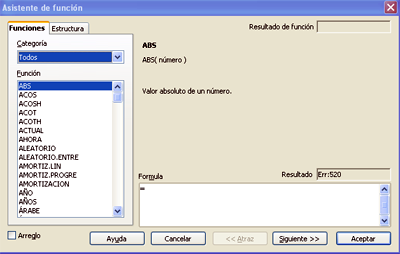
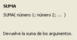
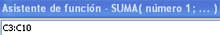
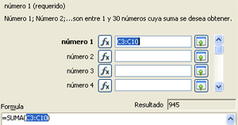
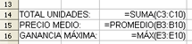

Hojas de cálculo
4.1. Asistente de funciones
Ya que es muy difícil aprender la sintaxis de todas las funciones, los programas de hojas de cálculo proporcionan una herramienta para evitar errores.
En OOo Calc se denomina AutoPiloto o Asistente de funciones y se puede activar mediante el icono , situado entre el cuadro de nombres y la barra de fórmulas, o en el menú "Insertar", "Función".

Para utilizar el asistente de funciones hay que seguir los siguientes pasos:
|
1. Activar la celda en la que se va a aplicar la fórmula.
|

|
| 2. Abrir el asistente de funciones. | |
| 3. Seleccionar la función que se quiere introducir. En el cuadro de diálogo podemos ver la sintaxis y una descripción de la función. | |
| 4. Introducir los argumentos de la función. En negrita aparecen los imprescindibles y el resto son opcionales. Los argumentos se pueden seleccionar directamente de la hoja utilizando el icono: |  |
|

Captura de pantalla de elaboración propia
|
|
Ejercicio Resuelto
En el ejercicio del apartado anterior, vamos a añadir tres datos más. Fíjate en la imagen y aplica las funciones que aparecen mediante el asistente de funciones.

Ya hemos visto que la sintaxis general de las funciones es sencilla, sólo hay que conocer el nombre de la función y los argumentos. Sin embargo, es habitual que al aplicar una función, obtengamos un mensaje de error indicando que algún dato de la fórmula utilizada no es correcto.
 |
OpenOficce.org Calc puede mostrar el error de tres formas:
|
Obra publicada con Licencia Creative Commons Reconocimiento No comercial Compartir igual 4.0